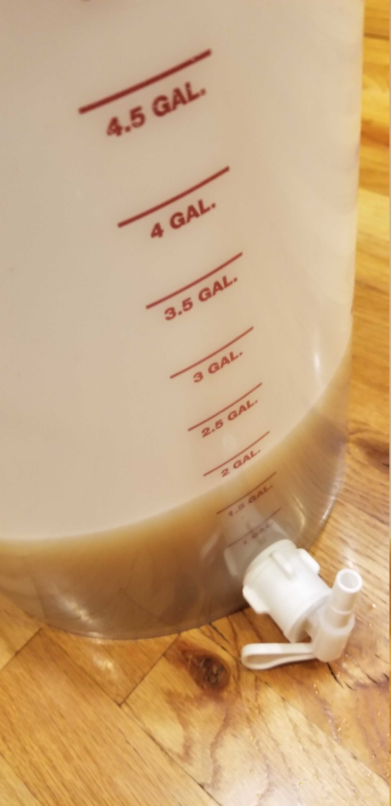
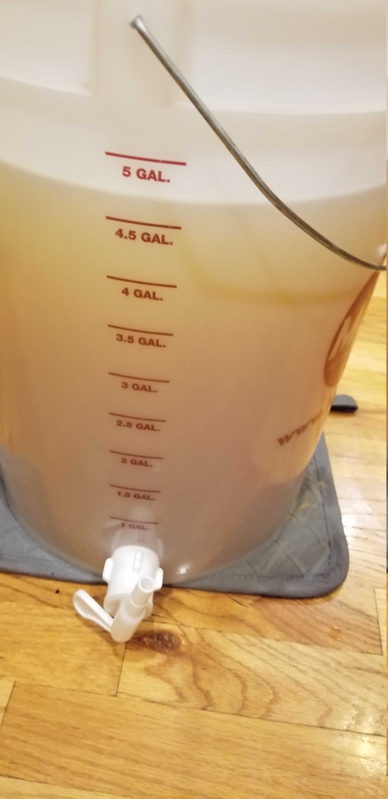
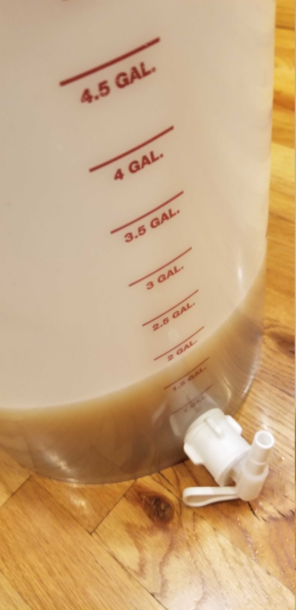
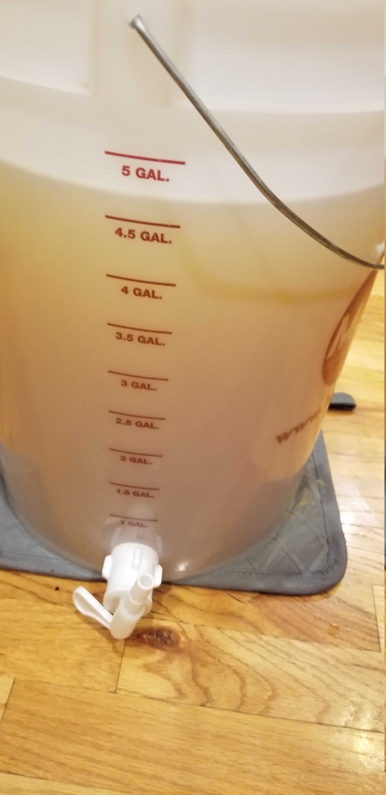
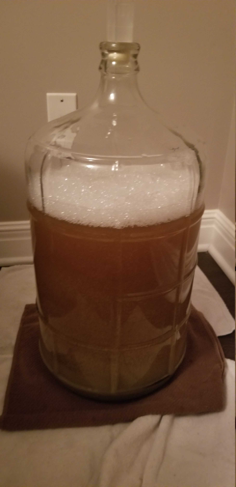
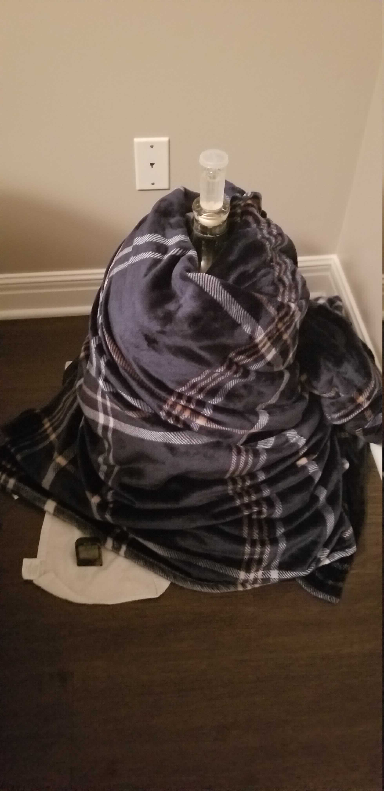

An attempt at making a refreshing, sessionable saison for hot days on the porch. This is utilizing malted white wheat rather than raw to cut some of the wheat bite, just as an extra step to make this sharable.
Recipe: Summer Saison
General Information
| Batch Size | 5 Gal |
| Batch Type | All Grain |
| Expected OG | 42 |
| Actual OG | 43 |
| Expected FG | 11 |
| Actual FG | 4 |
| ABV | 4.3% |
| IBU | 16 |
| Mash | Single Infusion, 60 min, 151°F |
| Boil | 60 min |
Ingredients
Ingredients are per 1 gallon where applicable
| Amount | Ingredient |
|---|---|
| Fermentables | |
| 1.2 lb | Belgian Pils |
| 0.5 lb | Whiteswaen Classic Wheat Malt |
| 0.1 lb | Rice Hulls (in mash, not fermentable) |
| Hops | |
| 0.4 oz | Tettnang 3.2 % AA |
| Yeast | |
| 1 packet* | Omega OYL-042 Belgian Saison 2 |
| Yeast Nutrient | |
| Yeast Energizer | |
| Other | |
| 1/2 tab* | Whirlflocc |
* Note that this should be enough for up to 5 gal.
Mash
| Type | Single Infusion |
| Sparge | Batch |
| Water/Grist | 1.25 qt/lb |
| Target pH | 5.23 |
| Target Mash Temp | 151°F |
| Grain Temp | 70°F |
| Strike Water Temp | 163°F |
| Actual Mash Temp | 150 |
| Strike Water Volume (1 gal batch) | 0.53 gal |
| Sparge Water volume ( 1 gal batch) | 0.85 gal |
Strike Water Profile
This and the transatlantic pale ale will be my first attempts to use local water. There is little calcium from the tap so I’ll be using calcium chloride to add it in, as well as 10% phosphoric acid to drop the pH to the target.
| Ca+2 | Mg+2 | Na+ | Cl- | SO4-2 | Alkalinity | Residual Alkalinity |
|---|---|---|---|---|---|---|
| 54.0 | 2.7 | 46.0 | 138.1 | 100.0 | -112.0 | -152.1 |
  
 
Definitely pleased with the clarity after the mash.
Mash Hiccup
The strike water didn’t quite get the grain to the desired temperature of 151°F, and I didn’t even have enough back upwater on hand to get raise the temperature high enough, so this mashed at 148°F for 7 minutes, then was raised to 150° for the remainder of the mash.
Boil
Boil Schedule
Values are for 1 gallon batch.
| Time Remaining in Boil | Addition |
|---|---|
| 60 min | 0.1 oz Tettnang |
| 35 min | 0.1 oz Tettnang |
| 5 min | 1/2 tab Whirlfloc* |
| Flameout | 0.2 oz Tettnang |
* Should be sufficient for up to 5 gallons.
Hit the Original Gravity spot on with this one. At some point I’ll need to work on bumping my efficiency beyond 65%.
Fermentation
This is being kept in a room that is typically in the low 70°Fs, and occasionally the upper 60°Fs. To accomodate for the slightly low ambient temperature I’m simply wrapping the carboy with a blanket to allow the yeast to warm itself.
 
Fermentation activity began within 16 hours.
Carbonation
This is being force carbonated in the keg at 64°F at 35 PSI. This was supplemented with the rolling method - carbing at 35 PSI for 3-5 minutes while rolling the keg vigorously.
Result
Taste Test 1
This taste test was taken on 7/13/19 at 60°F . The beer has been carbonated but not cooled or cold crashed.
Appearance
Dark gold to bronze in color. Fluffy white rolling head that retreats quickly. The beer is clear enough to see through in a glass, but only just so.
Aroma
Fruit dominates the aroma, particularly strawberry. Some bubblegum sweetness.
Flavor
Reminiscent of a yeast bread, probably a croissant. There is fruity sweetness as well. The finish, again, reminds me of bubble gum, although not unpleasantly so. This is a nice surprise - after fermenting the bubble gum flavor was much stronger.
Mouthfeel
Light, but undercarbonated. At some point the pressure was reduced to draw from the keg and not brought back up. This needs to be carbonated a bit more.